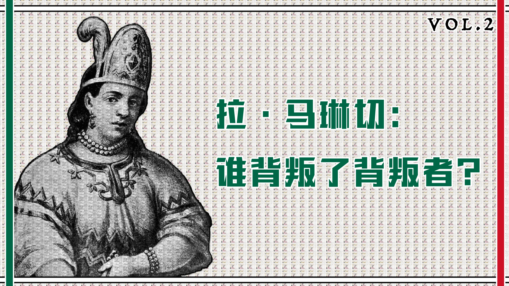
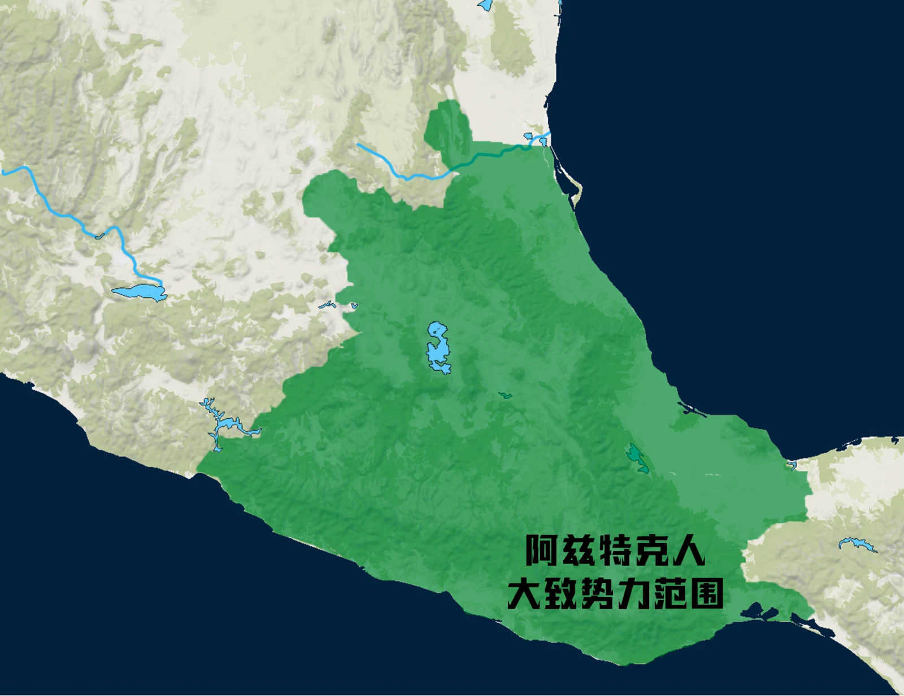

历史事实
可由现存记录、时间线与多方材料相互支持的部分。
00时间的女儿 · 005
一个女人，却活在三个名字里。
她是被转卖的女孩、掌握多种语言的翻译者、征服军中的外交行动者， 也是数百年后被写成“背叛”的民族象征。
谁背叛了背叛者？
沿着名字开始
01一个人 · 三个名字
每个名字都来自一套权力关系：出生的世界、受洗后的秩序，以及后世替她制造的意义。
三个名字同时保留：她不是三个互相取代的符号，而是一个在不同权力关系中不断被重新命名的人。
02阅读契约
史料留下的空白不能用肯定语气填满。这个故事把证据、解释与叙事动作并置，而不假装它们相同。
可由现存记录、时间线与多方材料相互支持的部分。
对互相冲突或不足的证据所作的推论，必须保留“可能”。
为了让读者理解因果而采用的讲述方式，不是被找回的私人日记。
名字、断裂、湖面与红线是当代设计语言，不是历史图像证据。
把十六世纪初的中部美洲理解成现代民族国家，会让“背叛”这个判断从一开始就站错位置。
城邦、附庸、贡赋与竞争关系层层相叠。不同纳瓦语群体并不自动属于同一国家， 更不会天然拥有同一个政治忠诚。
征服不是西班牙人与一个单一“原住民阵营”的两方战争。 各地政治行动者根据长期积怨与眼前风险作出选择。
04阿兹特兰 · 纳瓦 · 墨西加
“阿兹特克”是后世常用的总称；“墨西加”更具体地指向建立特诺奇蒂特兰的群体。 三城同盟通过战争与贡赋扩大控制，却没有抹去地方政治。
“纳瓦人”“墨西加人”“阿兹特克帝国”与现代墨西哥国族不是同义词。 用十九世纪民族主义回看十六世纪，会制造并不存在的单一忠诚。


05约 1500 · 奥卢塔
她大约出生于今天墨西哥湾沿岸附近。具体年份、地点与出生名都无人知晓。 西班牙记录称她出身于地方贵族家庭，但这些记载本身也带着征服者的视角。
边缘不是空白：这里连接纳瓦语与玛雅语世界，也连接贡赋网络、海岸贸易与地方权力。
06失去的出生名
她后来使用的纳瓦特尔语带有宫廷与贵族表达的痕迹——这支持了高阶出身的可能，却不能替代她自己的证词。
07第一次背叛
一种叙述称母亲再婚后，为保护新家庭的继承，把她交给了商人。 这个故事流传最广，却也可能经过道德化整理。
另一种解释把她放进地方战争、政治交换或贡赋网络中。 现存证据不足以让其中一种完全胜出。
因为无论哪一种成立，她都不是自由选择离开家园。把争议保留下来，比用戏剧性填补空白更接近史料边界。
08被迫南下的路线
她可能先被带到重要贸易节点希卡兰戈，后来又进入玛雅语世界的波通昌。 地理位移同时切断了亲族、身份与原有语言环境。

09语言作为生存方法
在玛雅语世界生活多年后，她掌握当地语言。后来，这种能力把一个被转卖的女孩推到帝国崩塌的中心。
学习语言可以是适应，也是被迫生活留下的技术。它既不证明她认同奴役她的人， 也不能被浪漫化成命运早已安排的“天赋”。
语言先救她活下去，后来也被战争征用。
船、马、钢铁与火器改变了战斗的尺度；陌生的疾病还没有被任何一方真正理解。
11受洗 · 命名
受洗把她纳入西班牙基督教秩序，“Doña”又暗示她被承认为有地位的女性。 但尊称没有取消她身处征服队伍中的依附与不自由。
12翻译链
贡赋、亲族、礼仪、威胁与联盟，各自有无法直接替换的政治含义。
先把纳瓦特尔语转为玛雅语，再与阿吉拉尔连接到西班牙语。
王权、改宗、占有、契约与战争命令，通过她进入另一个政治宇宙。
贡赋、亲族、礼仪、威胁与联盟，各自有无法直接替换的政治含义。
先把纳瓦特尔语转为玛雅语，再与阿吉拉尔连接到西班牙语。
王权、改宗、占有、契约与战争命令，通过她进入另一个政治宇宙。
13“Malinche”的诞生
“Malintzin”的敬称被西班牙耳朵转写为“Malinche”。在某些记录里， 科尔特斯也因总与她共同出现而被称作“马琳切的领主”。
名字在两个人之间移动，说明当时的观察者已经把他们视为一个沟通与权力组合。 后来，这个名字却几乎完全落在她一人身上。
共同完成的政治行动，最后变成一个女人单独承担的历史符号。
他带来的，是对土地、主权、宗教与财富截然不同的规则——以及把地方冲突转化为殖民征服的野心。
把征服解释成“原住民把西班牙人当作神”过度简化了复杂的试探、外交与误判。 各方都在读取对方，也都可能误读。
后来的叙述常把事件写成宿命。更谨慎的读法关注武力、联盟、信息差与相互试探，而不把一方描述为被动等待征服。

15韦拉克鲁斯 · 托托纳克
受三城同盟贡赋压力的托托纳克政治领袖，把新来者视为可能改变力量平衡的伙伴。 他们不是毫无判断地“帮助征服自己”，而是在既有冲突中行动。
马琳切的翻译让不满可以被组织成承诺，让承诺又变成兵力、补给与路线。
16特拉斯卡拉
特拉斯卡拉与墨西加长期敌对。它与西班牙队伍的关系经过战斗与谈判才形成， 并成为后来围攻特诺奇蒂特兰的关键力量。
一些西班牙叙述称马琳切从当地女性那里得知伏击计划，并把消息告诉科尔特斯。 随后的杀戮真实发生，但“预谋伏击”的细节、来源与规模至今存在争议。
征服者的记述可能为暴力辩护；后来的材料也有各自政治位置。她是否、如何获得警告， 以及这条信息在决定中占多大作用，都不能脱离来源批判。
18湖上的堤道
1519 年 11 月，西班牙人与数量更多的原住民盟军沿堤道进入特诺奇蒂特兰。 市场、神庙、道路与湖上工程远超许多欧洲来客的想象。
当代几何隐喻：不是城市复原图，也不对应具体建筑比例。
19相遇
礼仪、礼物、主权声明与威胁都要穿过翻译链。她不只是“复述”——每一个称谓和语气都可能改变政治意义。
她使用自己的声音，打开了两套秩序之间的门。
这句话描述她在沟通中的结构性位置，不是她留下的自述。她对蒙特苏马、科尔特斯或这座城市的私人感受无人知晓。
20黄金 · 神庙 · 软禁
西班牙人追问黄金、冲击宗教空间，并把蒙特苏马控制在自己手中。 原本以外交礼仪维持的共处越来越像一场以人质为核心的占领。
马琳切在其中继续翻译命令、要求与解释。她的能力扩大了西班牙人的行动范围， 也让她更深地卷入由他们发动的暴力。
承认她的作用，不等于把决定战争的人从责任中移走。
主权、宗教、礼物、战争、盟誓与城市秩序，不再共享同一套边界。
22托斯卡特尔节
科尔特斯离城期间，阿尔瓦拉多的部队在宗教节庆中发动杀戮。 触发原因在记录中互相冲突，但西班牙人对聚集者施加的大规模暴力并不因此消失。
语言能阻止一场战争吗？
当暴力由持武器者主动决定，要求一个翻译者“说服所有人”本身就是把权力差异藏起来。
23悲痛之夜
逃离特诺奇蒂特兰的堤道上，许多人死于战斗、拥挤与湖水。她活了下来。
活下去。
“活下去”概括她在反复转卖、战争与撤退中的生存位置。没有史料证明她在这一夜说过这句话。
疫病造成的死亡与政治震荡，不能被归结为任何一个翻译者的选择。
撤退后的西班牙队伍在特拉斯卡拉重整，并依靠更广泛的原住民联盟返回。 疫病、地方敌对、军事技术与湖上封锁共同改变了力量平衡。
最后围攻这座城市的，绝不只有几百名欧洲人。 这使历史更复杂，也使“把征服归罪于一个女人”更难成立。
251521 · 围城与陷落
马琳切继续参与翻译与谈判。就结果而言，她确实帮助征服更快、更有效地发生； 但她既不是发动殖民工程的人，也不是造成这一切的唯一力量。
她继续参与远征与外交，拥有财产，生育子女，后来与胡安·哈拉米约成婚。
她与科尔特斯的关系不能只写成爱情，也不能只用现代的单一关系词概括。 权力、性别、依附、策略与生存彼此纠缠。
她何时去世、因何去世，史料众说纷纭。晚年不是一个已经被完整找回的结局。
她获得过地位与资源，也在持续不对等的殖民结构中行动。能动性与强迫可以同时存在。
27Malinchismo
数百年后，“malinchismo”被用来指责崇洋、出卖本国与否定自身文化。 一个十六世纪的原住民女性，被放进后来才形成的民族国家想象里受审。
她的语言、信息与外交工作帮助了征服，也使殖民暴力更有效地推进。
她先被家庭或战争体系出卖、被奴役、被转交；后世又把共同历史创伤压在她一个人身上。
28重新阅读
追问为什么殖民者的决策常被解释为政治，而女性的生存策略却被解释为道德缺陷。
不把所有地方群体抹成同一个阵营，也不让殖民暴力因内部联盟而失去名字。
她既不是纯粹的救世主，也不是超越时代的永恒叛徒。 她是在强迫、机会、危险与不完整选择之间行动的人。
29把问题留给读者
这里没有唯一正确选项。选择只改变下方的阅读回应，不会被保存或发送。
选择一个角度，继续检视“责任”与“选择”之间的距离。
来源与证据边界
创作者 21 页中文文稿《马琳切：谁背叛了背叛者？》，按“前世、翻译者、征服者、杀戮、撕裂、终局、幸存者、背叛者”八章组织。
创作者提供的两份中文字幕稿，以及封面与 Own Map 地图文件。 网站没有把现代拼贴图称作历史肖像，也没有把解释性地图称作同期地图。
Data / measurement boundary
当前版本不连接任何分析服务，不设置跟踪 Cookie，不采集身份信息，也不保存你的名字视角、地图选择或最终回应。 页面仅在本地派发可选的语义事件，方便未来在获得明确同意后接入隐私友好的统计方案。